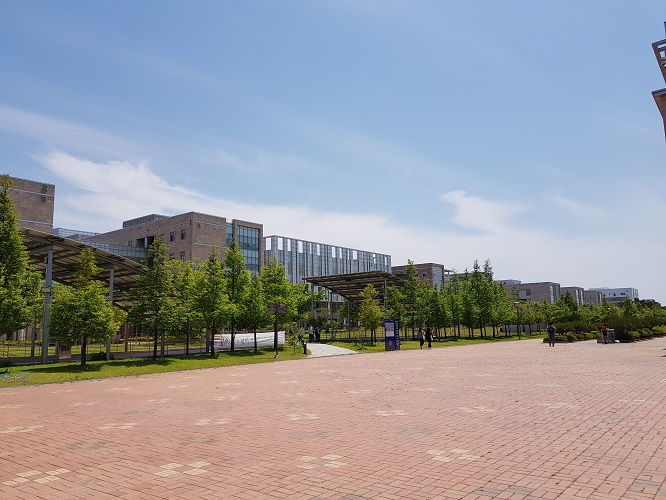

Hello guys, This is my photos I've taken when I've lived in Song-Do. I uploaded 4 pictures, and I will explain about each photos.
So If you want to know what it is, Keep reading this website.
Pictures of Korea By Hyerin Kim

The one of the reasons what I like Song-Do is because of my university. That is in Song-Do, so I think it's so convenience for commuting to school,
and the colleges are close to each college, so it is easy to find the classroom. There also have much grass, so we usually enjoy the rest on the outside with sunshine.
The first picture is an example of my opinion.
The second picture is taken when the school festival had been held. In Korea, many universities cast singers for celebrating own university festival. Similarly, our
university did it. Every fair, we build the set for singers and welcome. Staying at school with friends until midnight is quite exciting, so the festival is the most interesting
happening in the school.
By the way, Song-Do has not only many school festivals but also many world festivals. These are examples of preceding opinion, and my friends and I took this photos at
the World beer festival in Songdo. As shown in the picture above, the "cass" is the Korean beers. Many Korean enjoy these beers, so when you drink this, you can feel the
Korean style beers. In festival, we always accompany with music of rock or hip-hop genres, so the people who like music or beers can gather and be a friends in festival!
So these are what I want to introduce the cultures of Song-Do using my photos. The below content is the video that can explain more specific information. I recommend watching
this video, and Thank you for watching and reading!